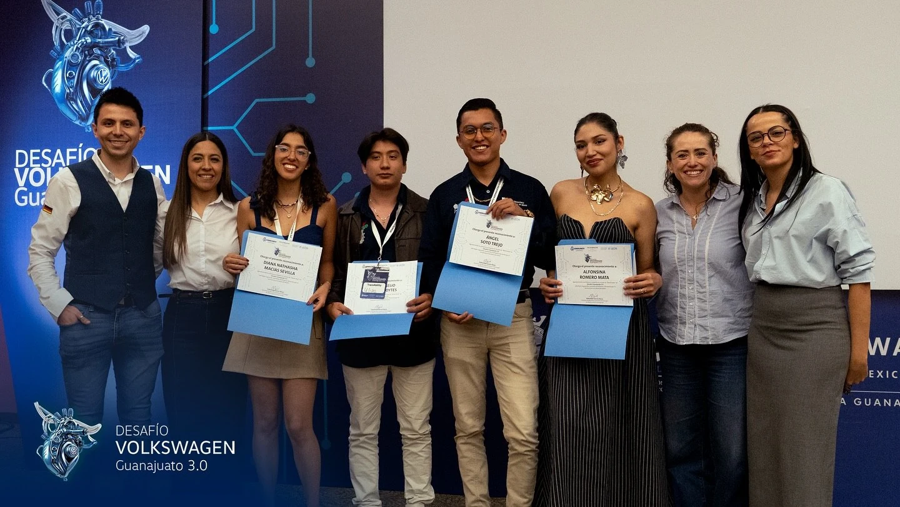

IA al servicio
de la calidad industrial.
TraceAIbility · Volkswagen Guanajuato
Sistema de trazabilidad de fallas en ensamble de motores, con recuperación de información e inteligencia artificial para apoyar el análisis de recurrencias y la toma de decisiones.
Consultar constancia